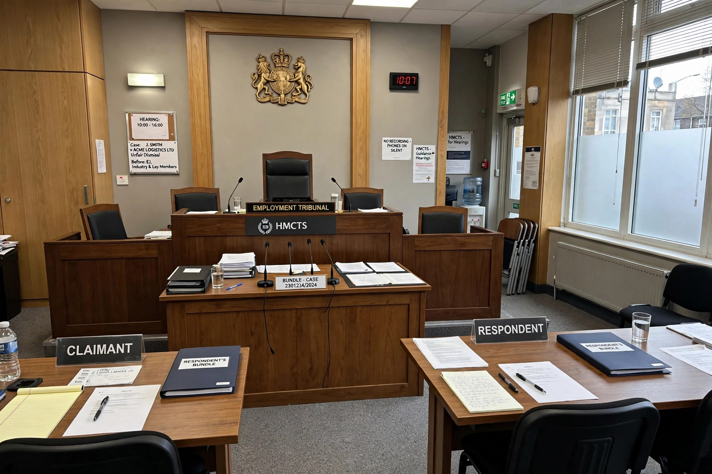

Wrongful dismissal, also called wrongful termination, is a legal doctrine in labour law describing a situation in which an employee's contract of employment has been terminated by the employer in breach of the contract's terms, or of a statutory provision or rule of common law governing termination.

In the United Kingdom, wrongful dismissal is a contract claim — for example, dismissal without the required notice — whereas unfair dismissal is a separate statutory claim about whether the employer acted reasonably in dismissing for a fair reason and by a fair procedure. Wrongful dismissal claims require no qualifying period of service; unfair dismissal generally does, with exceptions such as dismissals for whistleblowing or discrimination.
Common grounds include breach of express notice terms, dismissal in breach of a contractual disciplinary procedure, and summary dismissal without gross misconduct. The usual remedy is damages limited to pay for the notice period, though courts may grant injunctions in rare cases. In Canada, reasonable notice at common law can be substantially longer than statutory minimums. In the United States, employment is generally at-will, but exceptions exist for breaches of implied contract, public policy and anti-discrimination statutes.
Related is constructive dismissal, where an employer's serious breach of contract entitles the employee to resign and treat themselves as dismissed.